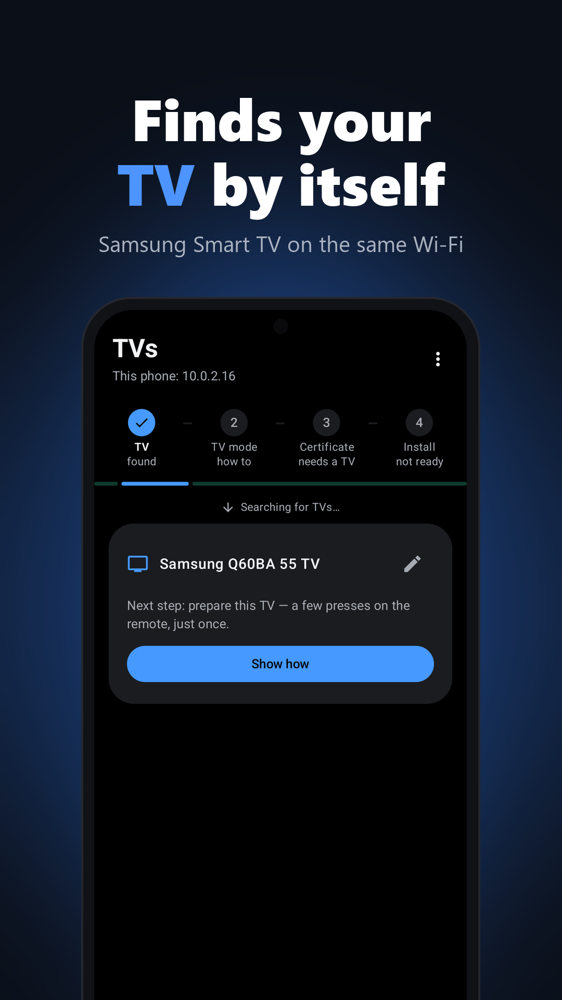
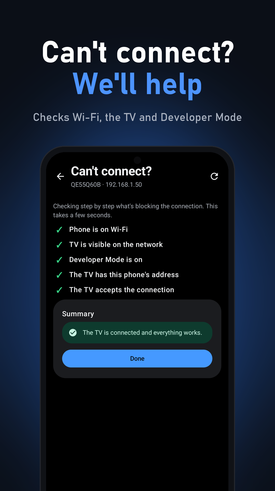
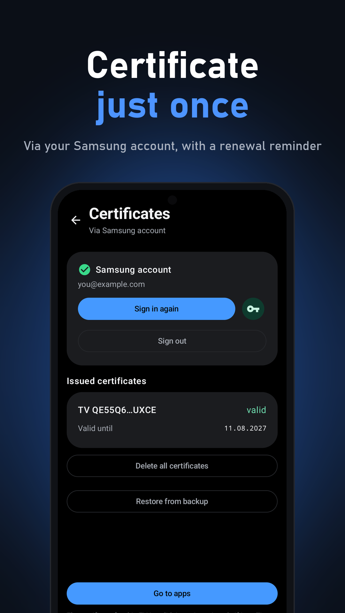
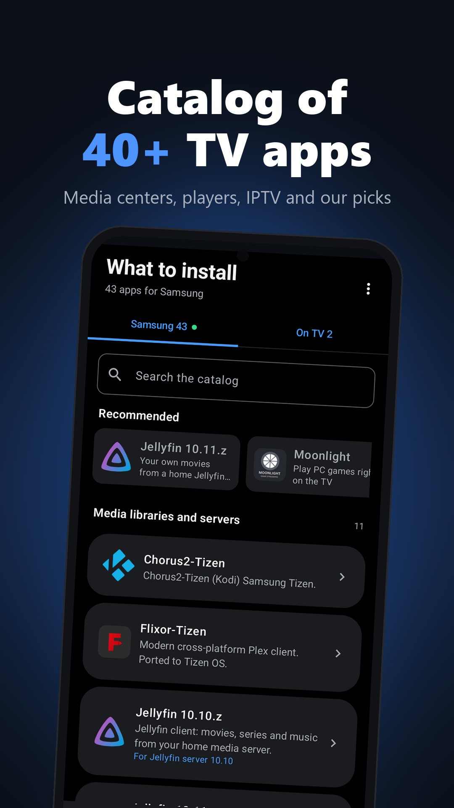
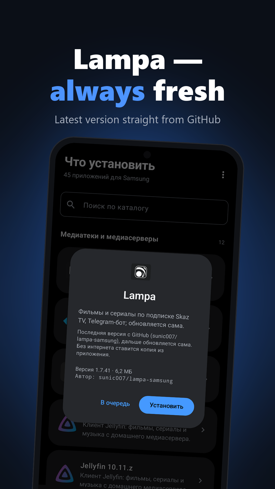
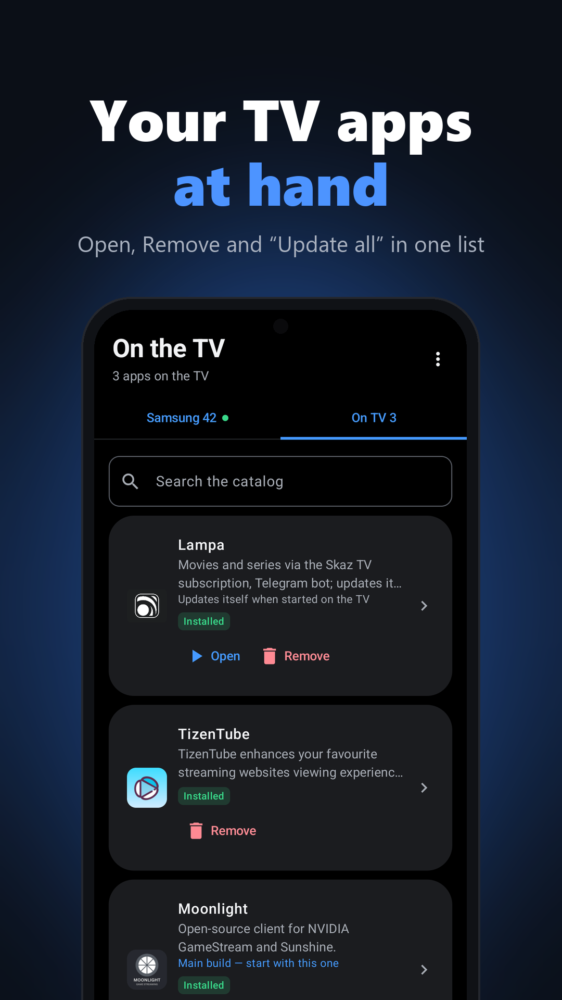
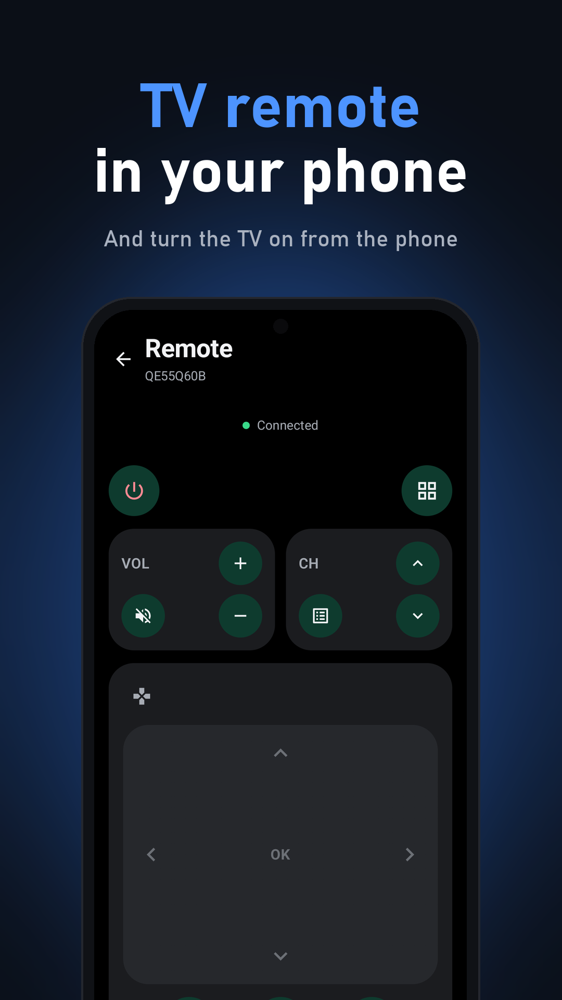

TV Installer finds your TV on Wi‑Fi, gets the Samsung certificate and installs .wgt apps —
no PC, no Tizen Studio. Free.







Any Samsung Tizen TV on the same Wi‑Fi.
Animated step-by-step Developer Mode guide, following Samsung's own.
Sign in with your Samsung account once — no PC needed.
Media centers, players, streaming, IPTV — or your own .wgt.
Lampa comes from its latest GitHub release; the app updates itself too.
Every step is visible; certificates can be backed up to a file.
12345 → turn Developer mode on and enter your phone's IP (TV Installer shows it).TV Installer — бесплатное Android-приложение: ставит приложения .wgt на телевизоры Samsung (Tizen)
прямо с телефона, без компьютера и Tizen Studio. Само находит ТВ, получает сертификат Samsung и устанавливает
приложение; анимация показывает, что нажать на пульте. Интерфейс — на русском и английском.
Главное приложение каталога — Lampa для Samsung с Telegram-ботом и автообновлением.
⬇ Скачать APK